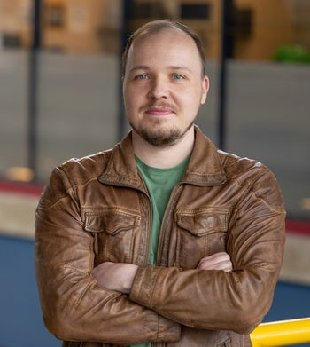

Contact
Academic mail goes to the university address. All startup and company inquiries must go to the Adherence address.
Bio
| 2024–now | Asst. Prof | MBZUAI |
| 2019–24 | PhD | U. Waterloo |
| 2016–18 | MSc | RWTH-Aachen |
Guten Tag, I’m Nils 👋. I’m an Assistant Professor of Machine Learning at MBZUAI in Abu Dhabi leading the
Secure, Private, Open and Trustworthy  AI lab.
I have received Waterloo's 2024 Alumni Gold medal, my PhD thesis received the Top Mathematics Doctoral Prize and in 2025 I won an Amazon Research Award. Since 2025, my research was awarded more than $1.4 million USD in external research grants. Recently I founded Adherence, a startup delivering enterprise AI agents. Check out our website.
AI lab.
I have received Waterloo's 2024 Alumni Gold medal, my PhD thesis received the Top Mathematics Doctoral Prize and in 2025 I won an Amazon Research Award. Since 2025, my research was awarded more than $1.4 million USD in external research grants. Recently I founded Adherence, a startup delivering enterprise AI agents. Check out our website.
My research focuses on (i) secure and (ii) private machine learning, and (iii) AI safety. I am interested in researching methods to make large ML system accessible to millions of users in a responsible way. This includes topics such as content watermarking, privacy-preserving inference, AI safety & security and developing conversational agents with social intelligence.
- F'26: ML8502 – ML Security (upcoming)
- S'26: ML8509 – Collaborative ML (w/ S. Horvath)
- F'25: ML8502 – ML Security
- S'25: ML807 – Federated Learning (w/ P. Vepakomma)
- F'24: ML818 – Trustworthy ML (w/ K. Nandakumar, P. Vepakomma)